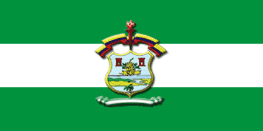
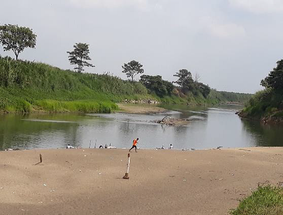
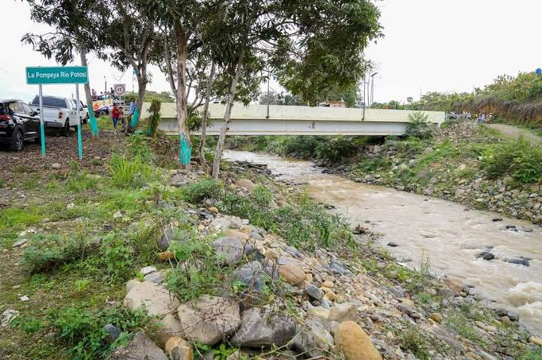
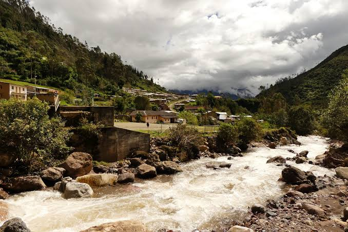
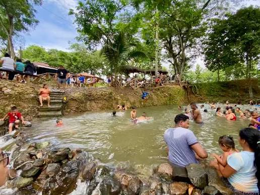
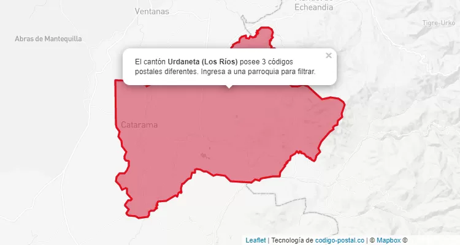

El cantón Urdaneta está ubicado en la provincia de Los Ríos, Ecuador. Su cabecera cantonal es Catarama y fue cantonizado el 11 de octubre de 1913. Su nombre fue elegido en honor al capitán venezolano Luis Urdaneta, héroe de la independencia. Antiguamente, Catarama era conocido como Puerto de Catarama debido al paso de embarcaciones por su río. Se caracteriza por su producción agrícola, especialmente de cacao, café, banano y frutas tropicales. Además, conserva las tradiciones y costumbres de la cultura montubia.

El cantón Urdaneta está conformado por dos parroquias:
catarama.
Seco de gallina criolla.
Estofado de pescado.
Sancocho de pescado.
Caldo de gallina criolla.
Cazuela de pescado.
Sudado de pescado.
Bollo de pescado.
Ayampaco de bocachico.
Pescado frito.
Ceviches.
Fritada.
Seco de pato.
Bollo de bocachico.
Son visitadas porque sus aguas tienen una corriente suave y, durante el verano, aparecen amplias playas de arena donde las personas pueden descansar y bañarse.

Es atractivo por sus aguas tranquilas, sus grandes rocas y la vegetación que proporciona sombra. Es un lugar apropiado para disfrutar de un baño y de la naturaleza.

Es conocido por sus aguas cristalinas de tonalidad verdosa y por estar rodeado de árboles y vegetación. Es atractivo para quienes disfrutan de la naturaleza y las actividades al aire libre.

visitado por sus aguas de color verde, su vegetación y sus paisajes naturales, que permiten disfrutar de un ambiente tranquilo.




Volver al índice principal